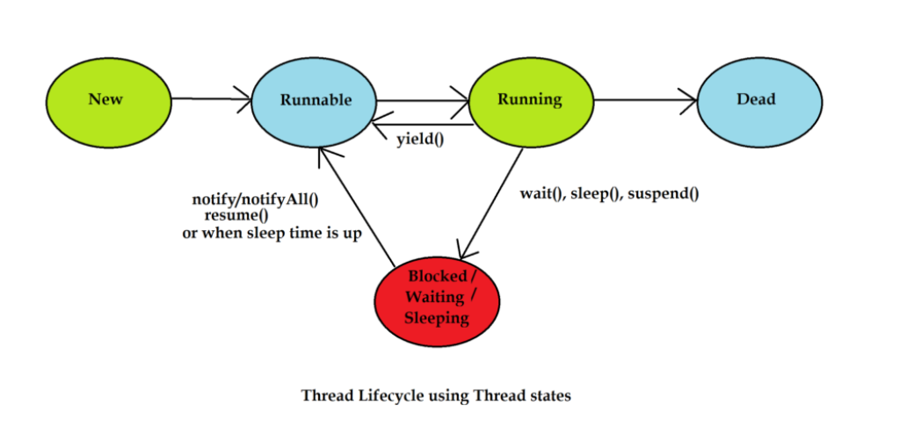

A thread in Java goes through a defined series of states during its life cycle. These states are managed by the Thread class and the Java Virtual Machine (JVM). The thread life cycle includes the following states:
1. New StateWhen a thread object is created but not yet started, it is in the New state.
Thread thread = new Thread(() -> System.out.println("Thread running"));
Here, the thread is not yet started and is waiting to be activated using the start() method.
2. Runnable StateAfter calling the start() method, the thread enters the Runnable state. In this state, the thread is ready to run but is waiting for CPU time for execution.
thread.start(); // Moves the thread to Runnable state
The thread may not immediately begin execution since it depends on the thread scheduler to allocate CPU time.
3. Running StateWhen the thread scheduler selects a thread from the Runnable pool and allocates CPU time, the thread enters the Running state and executes its task.
public void run() {
System.out.println("Thread is running...");
}
4. Blocked/Waiting/Timed Waiting State
A thread enters one of these states if it is waiting for a resource or for another thread's signal:
synchronized (lock) {
lock.wait(); // Waiting state
}
5. Terminated State
Once the thread completes its task, it enters the Terminated state, also called the Dead state. A thread in this state cannot be restarted.
System.out.println("Thread has finished execution.");
Thread Life Cycle Diagram

In Java, threads are represented by the Thread class, and there are multiple ways to create and start a thread. Here are the main approaches to create threads:
1. Extending the Thread ClassTo create a thread by extending the Thread class, you need to override its run() method. The run() method contains the code that will execute when the thread is started.
class MyThread extends Thread {
@Override
public void run() {
System.out.println("Thread is running");
}
}
public class Main {
public static void main(String[] args) {
MyThread thread = new MyThread();
thread.start(); // Starts the thread
}
}
Note: This approach is simple but limits inheritance because Java does not support multiple inheritance.
2. Implementing the Runnable InterfaceYou can create a thread by implementing the Runnable interface and defining the run() method. This approach is more flexible since your class can extend another class.
class MyRunnable implements Runnable {
@Override
public void run() {
System.out.println("Thread is running");
}
}
public class Main {
public static void main(String[] args) {
MyRunnable runnable = new MyRunnable();
Thread thread = new Thread(runnable);
thread.start(); // Starts the thread
}
}
3. Using Lambda Expressions (Java 8+)
With Java 8, you can use lambda expressions to create threads more concisely.
public class Main {
public static void main(String[] args) {
Thread thread = new Thread(() -> System.out.println("Thread is running"));
thread.start(); // Starts the thread
}
}
4. Using the Callable and Future Interfaces
The Callable interface allows creating threads that can return a result or throw exceptions. This is achieved by using an ExecutorService.
import java.util.concurrent.*;
public class Main {
public static void main(String[] args) {
ExecutorService executor = Executors.newSingleThreadExecutor();
Callable<String> task = () -> "Thread result";
Future<String> future = executor.submit(task);
try {
System.out.println(future.get()); // Retrieves the result
} catch (Exception e) {
e.printStackTrace();
} finally {
executor.shutdown();
}
}
}
5. Creating Threads with the Executor Framework
The Executor framework simplifies thread management by decoupling task submission from thread creation. You can submit tasks to an ExecutorService, and it manages the thread pool.
import java.util.concurrent.Executors;
public class Main {
public static void main(String[] args) {
ExecutorService executor = Executors.newFixedThreadPool(2);
Runnable task1 = () -> System.out.println("Task 1 running");
Runnable task2 = () -> System.out.println("Task 2 running");
executor.submit(task1);
executor.submit(task2);
executor.shutdown(); // Gracefully shuts down the executor
}
}
6. Anonymous Inner Class
You can create a thread using an anonymous inner class for quick implementation without creating separate classes.
public class Main {
public static void main(String[] args) {
Thread thread = new Thread(new Runnable() {
@Override
public void run() {
System.out.println("Thread is running");
}
});
thread.start(); // Starts the thread
}
}
Key Notes
Thread safety refers to the ability of a program to handle multiple threads simultaneously without causing data inconsistency or corruption. In Java, several techniques are available to ensure thread safety:
1. SynchronizationSynchronization ensures that only one thread at a time can access a specific section of code (a synchronized block or method) that accesses shared resources. This is achieved using the synchronized keyword.
public class Counter {
private int count = 0;
public synchronized void increment() {
count++;
}
}
In the example above, the increment() method is synchronized, ensuring that only one thread can increment the count at a time.
2. Volatile KeywordVolatile is used to declare variables whose updates are immediately visible to all threads. It guarantees that all reads and writes to the variable are directly from main memory, not cached locally in a thread’s CPU.
private volatile boolean flag = false;
public void setFlag() {
flag = true;
}
public void checkFlag() {
if (flag) {
// Do something
}
}
By marking flag as volatile, it ensures that any thread reading this variable will see the latest value written by another thread.
3. Atomic ClassesAtomic classes provide lock-free and thread-safe operations on single variables. These classes ensure atomicity without requiring synchronization. They are part of the java.util.concurrent.atomic package.
AtomicInteger atomicInt = new AtomicInteger(0);
public void incrementCounter() {
atomicInt.incrementAndGet();
}
public int getCounter() {
return atomicInt.get();
}
These classes offer methods like incrementAndGet(), getAndSet(), compareAndSet(), etc., to perform atomic operations without the need for synchronization.
Comison| Technique | Description | Use Case |
|---|---|---|
| Synchronization | Locks a method or block, allowing only one thread to access the code block at a time. | When you need to protect access to shared resources such as counters, queues, or other mutable data. |
| Volatile Keyword | Ensures that changes to a variable are visible to all threads immediately. | When you need to access and update a shared boolean flag across multiple threads. |
| Atomic Classes | Provides atomic operations on variables without using synchronization. | For variables that are frequently updated by multiple threads, ensuring atomicity and thread safety. |
Synchronized Block is used in Java to restrict access to a particular section of code so that only one thread can execute it at a time. This ensures thread safety when multiple threads access shared resources.
Syntax
public class Example {
private int counter = 0;
public void increment() {
synchronized (this) {
counter++;
}
}
}
In the example above, the increment() method is synchronized, and the block inside it is a synchronized block that only allows one thread to access the increment operation at a time.
Both synchronization block and synchronized method provide thread safety but differ in how they are used and their scope.
1. Synchronized MethodA synchronized method locks the entire method for exclusive access. Only one thread can execute a synchronized method at a time, preventing other threads from entering the method until the current thread completes its operation.
public class Counter {
private int count = 0;
public synchronized void increment() {
count++;
}
}
Here, the increment() method is synchronized, meaning the entire method is locked for access by only one thread at a time.
2. Synchronized BlockA synchronized block is used to lock only a part of a method, providing finer-grained control over which resources need to be synchronized. It allows other parts of the method to execute without synchronization.
public class Counter {
private int count = 0;
public void increment() {
synchronized (this) {
count++;
}
// Other code
}
}
In the above example, only the increment operation is synchronized, not the entire method.
Key Differences| Aspect | Synchronized Method | Synchronized Block |
|---|---|---|
| Scope | Locks the entire method. | Locks only a specific section of the method. |
| Flexibility | Less flexible as it locks the entire method. | More flexible as you can control which part of the method is synchronized. |
| Performance | Higher performance overhead due to entire method lock. | Lower performance overhead since only a specific section is locked. |
Thread communication in Java refers to the process by which multiple threads can communicate with each other and coordinate their actions. This is achieved through the use of inter-thread communication methods provided by the Object class, such as wait(), notify(), and notifyAll(). These methods facilitate a way for threads to wait for certain conditions to be met before proceeding or to notify other threads that a condition has changed.
1. wait()The wait() method is called by a thread when it needs to relinquish the monitor and go into a waiting state until another thread invokes notify() or notifyAll().
synchronized (lock) {
while (someCondition) {
lock.wait();
}
// critical section
}
In the above example, the thread waits for the condition someCondition to become false before proceeding.
2. notify()The notify() method wakes up a single thread that is waiting on the object's monitor. It does not guarantee which thread will be awakened if multiple threads are waiting. This method is typically used when only one thread should be awakened to proceed with its work.
synchronized (lock) {
lock.notify();
}
A thread should call notify() only when it holds the object's lock, otherwise, it will throw IllegalMonitorStateException.
3. notifyAll()The notifyAll() method wakes up all the threads that are waiting on the object's monitor. This is useful when all the waiting threads should be allowed to proceed.
synchronized (lock) {
lock.notifyAll();
}
Unlike notify(), notifyAll() ensures that all waiting threads will eventually get a chance to proceed.
Example ScenarioConsider a scenario where multiple threads are trying to access a shared resource:
public class Resource {
private boolean available = false;
public synchronized void produce() {
while (available) {
try {
wait();
} catch (InterruptedException e) {}
}
// Produce resource
available = true;
notifyAll();
}
public synchronized void consume() {
while (!available) {
try {
wait();
} catch (InterruptedException e) {}
}
// Consume resource
available = false;
notifyAll();
}
}
public class Producer implements Runnable {
private Resource resource;
public Producer(Resource resource) {
this.resource = resource;
}
public void run() {
resource.produce();
}
}
public class Consumer implements Runnable {
private Resource resource;
public Consumer(Resource resource) {
this.resource = resource;
}
public void run() {
resource.consume();
}
}
public class Main {
public static void main(String[] args) {
Resource resource = new Resource();
Thread producer = new Thread(new Producer(resource));
Thread consumer = new Thread(new Consumer(resource));
producer.start();
consumer.start();
}
}
In this example, the produce() method waits if the resource is not available and the consume() method waits if the resource is available. The use of wait(), notify(), and notifyAll() allows proper coordination between the producer and consumer threads.
Key PointsThe Executor Framework in Java, introduced in Java 5, is a high-level API that simplifies the management of threads and thread pools. It provides mechanisms to execute tasks asynchronously, allowing developers to focus on task execution rather than thread management.
Key Components of Executor FrameworkThe base interface of the framework. It provides a method, execute(Runnable), for executing tasks.
Executor executor = new Executor() {
public void execute(Runnable r) {
new Thread(r).start();
}
};
executor.execute(() -> System.out.println("Task executed!"));
Extends the Executor interface and adds more control over task execution, such as submitting tasks, shutting down the service, and retrieving results.
ExecutorService executorService = Executors.newFixedThreadPool(3);
// Submitting Runnable task
executorService.submit(() -> System.out.println("Task executed!"));
// Shutdown
executorService.shutdown();
Extends ExecutorService to schedule tasks to execute periodically or after a delay.
ScheduledExecutorService scheduler = Executors.newScheduledThreadPool(1);
scheduler.schedule(() -> System.out.println("Delayed Task!"), 5, TimeUnit.SECONDS);
scheduler.shutdown();
The most commonly used implementation of ExecutorService. It manages a pool of worker threads and reuses them for executing multiple tasks, improving performance.
ThreadPoolExecutor executor = new ThreadPoolExecutor(
2, // core pool size
5, // maximum pool size
60, // keep-alive time
TimeUnit.SECONDS,
new LinkedBlockingQueue()
);
executor.execute(() -> System.out.println("Task in ThreadPool!"));
executor.shutdown();
Below is an example of how to use the Executor Framework to manage a pool of threads for executing tasks:
import java.util.concurrent.ExecutorService;
import java.util.concurrent.Executors;
public class ExecutorExample {
public static void main(String[] args) {
ExecutorService executor = Executors.newFixedThreadPool(3);
for (int i = 1; i <= 5; i++) {
int taskId = i;
executor.submit(() -> {
System.out.println("Executing Task " + taskId + " by " + Thread.currentThread().getName());
});
}
executor.shutdown();
}
}
Key Executor Implementations
| Implementation | Description |
|---|---|
| newFixedThreadPool(int nThreads) | Creates a thread pool with a fixed number of threads. |
| newCachedThreadPool() | Creates a thread pool that creates new threads as needed and reuses previously created threads when available. |
| newSingleThreadExecutor() | Creates an executor with a single worker thread. |
| newScheduledThreadPool(int corePoolSize) | Creates a thread pool that can schedule tasks to run after a delay or periodically. |
The Executor Framework is an essential tool in Java for managing threads and task execution efficiently. By using thread pools, scheduled tasks, and reusable worker threads, it provides a robust and scalable way to handle concurrent programming.
Deadlock is a situation in a multithreaded program where two or more threads are blocked forever, waiting for each other's resources. It typically occurs when multiple threads hold some shared resources (like locks) and try to acquire locks held by other threads, resulting in a circular wait.
Key Characteristics of DeadlockBelow is an example of deadlock caused by two threads trying to acquire locks on two resources in reverse order:
public class DeadlockExample {
private static final Object lock1 = new Object();
private static final Object lock2 = new Object();
public static void main(String[] args) {
Thread t1 = new Thread(() -> {
synchronized (lock1) {
System.out.println("Thread 1: Holding lock 1...");
try { Thread.sleep(100); } catch (InterruptedException e) {}
System.out.println("Thread 1: Waiting for lock 2...");
synchronized (lock2) {
System.out.println("Thread 1: Acquired lock 2!");
}
}
});
Thread t2 = new Thread(() -> {
synchronized (lock2) {
System.out.println("Thread 2: Holding lock 2...");
try { Thread.sleep(100); } catch (InterruptedException e) {}
System.out.println("Thread 2: Waiting for lock 1...");
synchronized (lock1) {
System.out.println("Thread 2: Acquired lock 1!");
}
}
});
t1.start();
t2.start();
}
}
In this example, Thread 1 acquires lock1 and waits for lock2, while Thread 2 acquires lock2 and waits for lock1, causing a deadlock.
How to Avoid Deadlock
synchronized (lock1) {
synchronized (lock2) {
// Avoid this scenario when possible
}
}
synchronized (lock1) {
synchronized (lock2) {
// Consistent order of acquiring locks
}
}
Lock lock1 = new ReentrantLock();
Lock lock2 = new ReentrantLock();
try {
if (lock1.tryLock(100, TimeUnit.MILLISECONDS)) {
try {
if (lock2.tryLock(100, TimeUnit.MILLISECONDS)) {
try {
// Critical section
} finally {
lock2.unlock();
}
}
} finally {
lock1.unlock();
}
}
} catch (InterruptedException e) {
e.printStackTrace();
}
Deadlocks can be detected using tools like thread dump analyzers (e.g., JConsole, VisualVM) or programmatically by checking for cycles in thread states.
ThreadMXBean threadMXBean = ManagementFactory.getThreadMXBean();
long[] deadlockedThreads = threadMXBean.findDeadlockedThreads();
if (deadlockedThreads != null) {
System.out.println("Deadlocked threads detected!");
}
Conclusion
Deadlocks can severely impact application performance and responsiveness. By following best practices such as lock ordering and using modern concurrency utilities, developers can minimize the risk of deadlocks in Java applications.
A race condition in Java occurs when two or more threads access shared data or resources concurrently, and the final outcome depends on the timing or interleaving of their execution. This can lead to unpredictable behavior, inconsistencies, or bugs in a multithreaded application.
Key Characteristics of a Race ConditionConsider a scenario where two threads increment a shared counter variable:
public class RaceConditionExample {
private int counter = 0;
public void increment() {
counter++;
}
public int getCounter() {
return counter;
}
public static void main(String[] args) throws InterruptedException {
RaceConditionExample example = new RaceConditionExample();
Thread t1 = new Thread(() -> {
for (int i = 0; i < 1000; i++) {
example.increment();
}
});
Thread t2 = new Thread(() -> {
for (int i = 0; i < 1000; i++) {
example.increment();
}
});
t1.start();
t2.start();
t1.join();
t2.join();
System.out.println("Final Counter: " + example.getCounter());
}
}
In this example, due to race conditions, the final counter value may not be 2000, even though both threads increment the counter 1000 times each. This happens because the increment operation is not atomic and involves multiple steps (read, increment, write), which can overlap between threads.
How to Prevent Race ConditionsRace conditions can be prevented using proper synchronization mechanisms to ensure only one thread accesses shared data at a time.
1. Using Synchronized Blocks or MethodsSynchronize critical sections of code to prevent concurrent access:
public synchronized void increment() {
counter++;
}
Or:
public void increment() {
synchronized (this) {
counter++;
}
}
2. Using ReentrantLock
Use ReentrantLock to explicitly lock critical sections:
import java.util.concurrent.locks.Lock;
import java.util.concurrent.locks.ReentrantLock;
public class RaceConditionExample {
private int counter = 0;
private Lock lock = new ReentrantLock();
public void increment() {
lock.lock();
try {
counter++;
} finally {
lock.unlock();
}
}
}
3. Using Atomic Classes
Java's java.util.concurrent.atomic package provides classes like AtomicInteger, which ensures atomicity without explicit synchronization:
import java.util.concurrent.atomic.AtomicInteger;
public class RaceConditionExample {
private AtomicInteger counter = new AtomicInteger(0);
public void increment() {
counter.incrementAndGet();
}
public int getCounter() {
return counter.get();
}
}
Best Practices to Avoid Race Conditions
Race conditions are a common problem in multithreaded applications that can lead to subtle and hard-to-reproduce bugs. By using synchronization, locks, or atomic classes, developers can ensure thread-safe access to shared resources and avoid race conditions in Java applications.
In Java, locks are synchronization mechanisms used to manage access to shared resources by multiple threads. They provide greater flexibility and control compared to the traditional synchronized keyword. Locks are part of the java.util.concurrent.locks package, introduced in Java 5.
Why Use Locks?A commonly used lock that allows a thread to re-acquire the lock it already holds. This eliminates deadlock in scenarios where a thread tries to lock the same resource multiple times.
import java.util.concurrent.locks.Lock;
import java.util.concurrent.locks.ReentrantLock;
public class ReentrantLockExample {
private final Lock lock = new ReentrantLock();
private int counter = 0;
public void increment() {
lock.lock(); // Acquire the lock
try {
counter++;
System.out.println(Thread.currentThread().getName() + ": " + counter);
} finally {
lock.unlock(); // Release the lock
}
}
public static void main(String[] args) {
ReentrantLockExample example = new ReentrantLockExample();
Runnable task = example::increment;
Thread t1 = new Thread(task);
Thread t2 = new Thread(task);
t1.start();
t2.start();
}
}
A lock that allows multiple threads to read concurrently but only one thread to write. It consists of two locks:
import java.util.concurrent.locks.ReadWriteLock;
import java.util.concurrent.locks.ReentrantReadWriteLock;
public class ReadWriteLockExample {
private final ReadWriteLock lock = new ReentrantReadWriteLock();
private int value = 0;
public void write(int newValue) {
lock.writeLock().lock();
try {
value = newValue;
System.out.println("Value updated to: " + value);
} finally {
lock.writeLock().unlock();
}
}
public void read() {
lock.readLock().lock();
try {
System.out.println("Read value: " + value);
} finally {
lock.readLock().unlock();
}
}
public static void main(String[] args) {
ReadWriteLockExample example = new ReadWriteLockExample();
Thread writer = new Thread(() -> example.write(42));
Thread reader = new Thread(example::read);
writer.start();
reader.start();
}
}
A more modern implementation of locks introduced in Java 8. It provides read and write locks with an additional feature: optimistic reading. Optimistic reads are faster but must be validated before use.
import java.util.concurrent.locks.StampedLock;
public class StampedLockExample {
private final StampedLock lock = new StampedLock();
private int value = 0;
public void write(int newValue) {
long stamp = lock.writeLock();
try {
value = newValue;
System.out.println("Value written: " + value);
} finally {
lock.unlockWrite(stamp);
}
}
public void optimisticRead() {
long stamp = lock.tryOptimisticRead();
int currentValue = value;
// Validate the stamp
if (!lock.validate(stamp)) {
stamp = lock.readLock();
try {
currentValue = value;
} finally {
lock.unlockRead(stamp);
}
}
System.out.println("Optimistically read value: " + currentValue);
}
}
| Feature | synchronized | Lock |
|---|---|---|
| Lock Acquisition | Automatically acquired and released. | Manually acquired and released. |
| Interruptibility | Cannot be interrupted while waiting. | Can be interrupted using lock.lockInterruptibly(). |
| Timeout Support | Not supported. | Supports timeout using tryLock(). |
| Fairness | Not fair by default. | Fair locks can be created using new ReentrantLock(true). |
| Read/Write Separation | Not supported. | Supported with ReadWriteLock. |
Locks provide advanced synchronization capabilities compared to the synchronized keyword, making them more suitable for complex concurrent applications. Depending on the use case, you can choose from ReentrantLock, ReadWriteLock, or StampedLock for efficient thread management in Java.
The ThreadLocal class in Java provides thread-local variables. Each thread accessing such a variable (via its get or set methods) has its own, independently initialized copy of the variable. This is useful for maintaining per-thread state, such as user sessions or transaction information, without interference from other threads.
Key Features of ThreadLocalEach thread maintains its own map of ThreadLocal variables internally. When you call set or get on a ThreadLocal variable, the thread-specific map is used to retrieve or update the value.
Code ExampleThe following example demonstrates how to use ThreadLocal for maintaining a thread-specific user ID:
public class ThreadLocalExample {
// ThreadLocal variable to store thread-specific user ID
private static ThreadLocal userId = ThreadLocal.withInitial(() -> "Unknown");
public static void main(String[] args) {
Runnable task = () -> {
String threadName = Thread.currentThread().getName();
userId.set(threadName + "-User"); // Set a unique user ID for each thread
System.out.println(threadName + ": " + userId.get()); // Retrieve the thread-specific user ID
userId.remove(); // Clean up after use
};
Thread thread1 = new Thread(task, "Thread-1");
Thread thread2 = new Thread(task, "Thread-2");
thread1.start();
thread2.start();
}
}
Methods in ThreadLocal
ThreadLocal is a powerful tool for thread-specific data storage, enabling clean and efficient management of thread-isolated states. However, it should be used judiciously to avoid memory leaks and maintain code clarity.
The ThreadGroup class in Java is a way to group multiple threads into a single unit. It allows you to manage threads as a group and perform actions on all threads in the group simultaneously. Thread groups are useful for managing thread hierarchies and organizing threads in complex multithreaded applications.
Key Features of ThreadGroupA ThreadGroup can be created by specifying a name or by associating it with a parent group.
public class ThreadGroupExample {
public static void main(String[] args) {
// Create a ThreadGroup
ThreadGroup group = new ThreadGroup("MyThreadGroup");
// Create threads in the group
Thread t1 = new Thread(group, () -> {
System.out.println(Thread.currentThread().getName() + " is running");
}, "Thread-1");
Thread t2 = new Thread(group, () -> {
System.out.println(Thread.currentThread().getName() + " is running");
}, "Thread-2");
t1.start();
t2.start();
// Get information about the ThreadGroup
System.out.println("Active threads in group: " + group.activeCount());
}
}
ThreadGroup Hierarchy
Thread groups can have parent-child relationships, creating a hierarchy of thread groups. The default parent group is the main group, and all user-created thread groups are descendants of it.
public class ThreadGroupHierarchy {
public static void main(String[] args) {
ThreadGroup parentGroup = new ThreadGroup("ParentGroup");
ThreadGroup childGroup = new ThreadGroup(parentGroup, "ChildGroup");
Thread t1 = new Thread(parentGroup, () -> System.out.println("Thread in ParentGroup"), "Thread-1");
Thread t2 = new Thread(childGroup, () -> System.out.println("Thread in ChildGroup"), "Thread-2");
t1.start();
t2.start();
System.out.println("Parent Group: " + parentGroup.getName());
System.out.println("Child Group: " + childGroup.getName());
}
}
Common Methods in ThreadGroup
| Method | Description |
|---|---|
| activeCount() | Returns the number of active threads in the group. |
| activeGroupCount() | Returns the number of active subgroups in the group. |
| getName() | Returns the name of the thread group. |
| list() | Prints information about the group and its threads to the console. |
| interrupt() | Interrupts all threads in the group. |
The ThreadGroup class is a basic way to group and manage threads. While it is useful for organizing threads and performing bulk actions, it has largely been replaced by modern concurrency frameworks like java.util.concurrent, which offer more robust features for thread management in Java.
The Fork/Join Framework in Java is a framework for parallel task execution. It is part of the java.util.concurrent package and was introduced in Java 7. The framework is designed to recursively divide a large task into smaller subtasks (fork), execute them concurrently, and then combine their results (join). It leverages multiple processors for efficient parallelism, making it ideal for compute-intensive operations.
Key Components of Fork/Join FrameworkThe Fork/Join Framework uses the "divide and conquer" approach:
The following example demonstrates how to calculate the sum of an array using the Fork/Join Framework:
import java.util.concurrent.RecursiveTask;
import java.util.concurrent.ForkJoinPool;
public class ForkJoinExample {
static class SumTask extends RecursiveTask {
private static final int THRESHOLD = 10; // Task size threshold
private int[] array;
private int start, end;
public SumTask(int[] array, int start, int end) {
this.array = array;
this.start = start;
this.end = end;
}
@Override
protected Integer compute() {
if (end - start <= THRESHOLD) {
// Direct computation for small tasks
int sum = 0;
for (int i = start; i < end; i++) {
sum += array[i];
}
return sum;
} else {
// Divide the task into subtasks
int mid = (start + end) / 2;
SumTask leftTask = new SumTask(array, start, mid);
SumTask rightTask = new SumTask(array, mid, end);
// Fork the subtasks
leftTask.fork();
rightTask.fork();
// Join results from subtasks
return leftTask.join() + rightTask.join();
}
}
}
public static void main(String[] args) {
int[] array = new int[100];
for (int i = 0; i < array.length; i++) {
array[i] = i + 1; // Initialize array with values 1 to 100
}
// Create ForkJoinPool
ForkJoinPool pool = new ForkJoinPool();
// Submit the root task to the pool
SumTask task = new SumTask(array, 0, array.length);
int result = pool.invoke(task);
System.out.println("Sum: " + result); // Expected: 5050
}
}
Advantages of Fork/Join Framework
The Fork/Join Framework is a powerful tool for parallel programming in Java. By splitting tasks into smaller subtasks and executing them concurrently, it leverages multi-core processors efficiently. While it's ideal for compute-heavy operations, careful design and understanding of its limitations are essential for optimal performance.
Java provides a robust set of concurrency utilities in the java.util.concurrent package to simplify the development of multithreaded applications. These utilities include thread management, synchronization mechanisms, concurrent data structures, and task execution frameworks. They address common concurrency challenges and improve scalability, performance, and ease of use.
Key Components of Java Concurrency UtilitiesThe Executors Framework provides a flexible mechanism for managing threads through thread pools. Key interfaces and classes include:
import java.util.concurrent.ExecutorService;
import java.util.concurrent.Executors;
public class ExecutorsExample {
public static void main(String[] args) {
ExecutorService executor = Executors.newFixedThreadPool(3);
for (int i = 0; i < 5; i++) {
executor.submit(() -> {
System.out.println(Thread.currentThread().getName() + " is running a task");
});
}
executor.shutdown();
}
}
Concurrent collections are designed to handle concurrent modifications safely:
import java.util.concurrent.ConcurrentHashMap;
public class ConcurrentMapExample {
public static void main(String[] args) {
ConcurrentHashMap map = new ConcurrentHashMap<>();
map.put("A", 1);
map.put("B", 2);
map.forEach((key, value) -> System.out.println(key + ": " + value));
}
}
Advanced synchronization tools provide more control than the synchronized keyword:
import java.util.concurrent.locks.ReentrantLock;
public class LockExample {
private static final ReentrantLock lock = new ReentrantLock();
public static void main(String[] args) {
Runnable task = () -> {
lock.lock();
try {
System.out.println(Thread.currentThread().getName() + " is working");
} finally {
lock.unlock();
}
};
new Thread(task).start();
new Thread(task).start();
}
}
Atomic variables provide lock-free thread safety for basic operations:
import java.util.concurrent.atomic.AtomicInteger;
public class AtomicExample {
public static void main(String[] args) {
AtomicInteger counter = new AtomicInteger();
Runnable task = () -> {
for (int i = 0; i < 10; i++) {
System.out.println(Thread.currentThread().getName() + ": " + counter.incrementAndGet());
}
};
new Thread(task).start();
new Thread(task).start();
}
}
For parallel task execution, the Fork/Join Framework divides tasks into smaller subtasks for efficient processing. It is ideal for recursive algorithms.
Advantages of Java Concurrency UtilitiesJava's concurrency utilities offer a comprehensive set of tools for managing multithreading efficiently. By utilizing the Executors framework, concurrent collections, atomic variables, and advanced locks, developers can build scalable, performant, and thread-safe applications with ease.
Thread priority in Java determines the relative importance of threads during execution. It is used by the thread scheduler to decide which thread to run when multiple threads are in a runnable state. Thread priority is an integer value ranging from 1 (MIN_PRIORITY) to 10 (MAX_PRIORITY), with a default value of 5 (NORM_PRIORITY).
Key Points about Thread PriorityThread priority can be set using the setPriority(int priority) method of the Thread class and retrieved using the getPriority() method.
class PriorityExample extends Thread {
public PriorityExample(String name) {
super(name);
}
@Override
public void run() {
System.out.println(Thread.currentThread().getName() + " with priority "
+ Thread.currentThread().getPriority() + " is running.");
}
public static void main(String[] args) {
PriorityExample t1 = new PriorityExample("Thread-1");
PriorityExample t2 = new PriorityExample("Thread-2");
PriorityExample t3 = new PriorityExample("Thread-3");
t1.setPriority(Thread.MIN_PRIORITY); // Set priority to 1
t2.setPriority(Thread.NORM_PRIORITY); // Set priority to 5
t3.setPriority(Thread.MAX_PRIORITY); // Set priority to 10
t1.start();
t2.start();
t3.start();
}
}
Output Example
The output might vary based on the thread scheduler, but typically higher-priority threads will be executed earlier or more frequently:
Thread-3 with priority 10 is running.
Thread-2 with priority 5 is running.
Thread-1 with priority 1 is running.
Considerations for Thread Priority
Thread priorities provide a mechanism to influence thread scheduling, but they are not deterministic and should not be solely relied upon for thread control. For precise task management, using Java concurrency utilities like ExecutorService or Fork/Join Framework is a better approach.
A daemon thread in Java is a low-priority background thread that provides support services to user threads. It runs continuously in the background and is automatically terminated by the JVM when all user threads finish execution. Daemon threads are typically used for tasks like garbage collection, background monitoring, or performing low-priority maintenance work.
Key Characteristics of Daemon ThreadsA thread can be marked as a daemon by using the setDaemon(true) method before starting the thread. The isDaemon() method can be used to check if a thread is a daemon thread.
class DaemonThreadExample extends Thread {
@Override
public void run() {
while (true) {
System.out.println(Thread.currentThread().getName() + " is a daemon thread.");
try {
Thread.sleep(1000);
} catch (InterruptedException e) {
e.printStackTrace();
}
}
}
public static void main(String[] args) {
DaemonThreadExample daemonThread = new DaemonThreadExample();
daemonThread.setDaemon(true); // Marking the thread as daemon
daemonThread.start();
System.out.println("Main thread is running.");
try {
Thread.sleep(3000); // Let the main thread run for 3 seconds
} catch (InterruptedException e) {
e.printStackTrace();
}
System.out.println("Main thread finished.");
// After this point, the daemon thread will automatically terminate.
}
}
Output Example
The output might look like this:
Main thread is running.
Thread-0 is a daemon thread.
Thread-0 is a daemon thread.
Thread-0 is a daemon thread.
Main thread finished.
After the main thread completes, the JVM terminates the daemon thread.
Differences Between User Threads and Daemon Threads| Aspect | User Threads | Daemon Threads |
|---|---|---|
| Purpose | Performs primary application tasks. | Performs background or support tasks. |
| JVM Shutdown | JVM waits for user threads to finish before shutting down. | JVM does not wait for daemon threads to finish before shutting down. |
| Default Behavior | By default, threads are user threads. | Daemon threads must be explicitly marked using setDaemon(true). |
| Priority | Higher priority compared to daemon threads. | Lower priority compared to user threads. |
Daemon threads are an essential part of Java's threading model, enabling background tasks to run without blocking the application lifecycle. They are especially useful for low-priority or non-critical processes but should be used cautiously to avoid unexpected behavior.
In Java, Callable and Future are key components of the java.util.concurrent package used for creating tasks and managing their results. Callable allows for concurrent computation with a return value, while Future represents the result of an asynchronous computation.
Callable InterfaceCallable is similar to Runnable but it allows a task to return a result and throw a checked exception. The primary method of Callable is call().
import java.util.concurrent.Callable; public class CallableExample implements CallableFuture Interface{ @Override public Integer call() throws Exception { int sum = 0; for (int i = 1; i <= 10; i++) { sum += i; } return sum; } public static void main(String[] args) throws Exception { Callable task = new CallableExample(); Future result = Executors.newSingleThreadExecutor().submit(task); System.out.println("Sum: " + result.get()); } }
Future represents the result of a computation and provides methods to check its status or retrieve its result. Methods include:
import java.util.concurrent.*;
public class FutureExample {
public static void main(String[] args) {
Callable task = () -> {
int sum = 0;
for (int i = 1; i <= 10; i++) {
sum += i;
Thread.sleep(100); // Simulate computation delay
}
return sum;
};
ExecutorService executor = Executors.newSingleThreadExecutor();
Future result = executor.submit(task);
try {
System.out.println("Sum: " + result.get());
} catch (InterruptedException | ExecutionException e) {
e.printStackTrace();
} finally {
executor.shutdown();
}
}
}
Key Differences Between Callable and Runnable
| Aspect | Runnable | Callable |
|---|---|---|
| Return Type | void | Generic type (e.g., Integer) |
| Exceptions | Cannot throw checked exceptions | Can throw checked exceptions |
| Usage | Best for tasks that don't require a return value or exception handling | Suitable for tasks that require a result and need to handle exceptions |
Future can be used with Callable to manage the asynchronous nature of computations. It allows the main thread to perform other tasks while the computation is ongoing.
import java.util.concurrent.*;
public class FutureWithCallable {
public static void main(String[] args) {
ExecutorService executor = Executors.newFixedThreadPool(3);
Callable task1 = () -> {
Thread.sleep(500); // Simulate computation
return 10;
};
Callable task2 = () -> {
Thread.sleep(300); // Simulate computation
return 20;
};
try {
Future result1 = executor.submit(task1);
Future result2 = executor.submit(task2);
System.out.println("Result 1: " + result1.get());
System.out.println("Result 2: " + result2.get());
} catch (InterruptedException | ExecutionException e) {
e.printStackTrace();
} finally {
executor.shutdown();
}
}
}
Advantages of Using Callable and Future
Callable and Future are powerful tools for handling tasks in a concurrent environment. While Runnable is simpler, Callable provides more features like returning a result and exception handling, making it preferable for many asynchronous tasks.
ScheduledExecutorService is a part of the java.util.concurrent package that allows you to schedule tasks to run after a given delay or periodically with a fixed delay. It's particularly useful for performing background tasks at fixed intervals.
Key Features of ScheduledExecutorServiceSchedules a task to run after a given delay.
ScheduledExecutorService executor = Executors.newScheduledThreadPool(1);
executor.schedule(() -> System.out.println("Task executed!"), 5, TimeUnit.SECONDS);
Schedules a task to run at a fixed rate.
ScheduledExecutorService executor = Executors.newScheduledThreadPool(1);
executor.scheduleAtFixedRate(() -> System.out.println("Fixed-rate task executed!"), 0, 2, TimeUnit.SECONDS);
Schedules a task to run after a fixed delay between the termination of one execution and the commencement of the next.
ScheduledExecutorService executor = Executors.newScheduledThreadPool(1);
executor.scheduleWithFixedDelay(() -> System.out.println("Fixed-delay task executed!"), 0, 3, TimeUnit.SECONDS);
import java.util.concurrent.*;
public class ScheduledExecutorServiceExample {
public static void main(String[] args) {
ScheduledExecutorService executor = Executors.newScheduledThreadPool(2);
Runnable task1 = () -> System.out.println("Task 1 executed at: " + System.currentTimeMillis());
Runnable task2 = () -> System.out.println("Task 2 executed at: " + System.currentTimeMillis());
executor.schedule(task1, 5, TimeUnit.SECONDS);
executor.scheduleAtFixedRate(task2, 0, 3, TimeUnit.SECONDS);
}
}
Comparison with Timer and TimerTask
While both ScheduledExecutorService and Timer are used for scheduling tasks, ScheduledExecutorService offers more features and better thread management. Timer is deprecated and uses TimerTask, which does not provide the flexibility that ScheduledExecutorService offers with methods like scheduleWithFixedDelay().
ConclusionScheduledExecutorService is a powerful tool for scheduling tasks with fixed delay or periodic execution, making it ideal for managing periodic background tasks in Java applications. It simplifies thread management and provides better performance compared to older alternatives like Timer and TimerTask.
BlockingQueue is a part of the java.util.concurrent package that is designed to be used in concurrent programming environments where multiple threads need to safely produce and consume elements from a shared queue.
Key Features of BlockingQueuequeue.add(element);
queue.offer(element);
queue.put(element);
queue.take();
queue.poll(1, TimeUnit.SECONDS);
queue.peek();
import java.util.concurrent.*;
public class BlockingQueueExample {
public static void main(String[] args) throws InterruptedException {
BlockingQueue queue = new LinkedBlockingQueue<>(5);
// Producer thread
new Thread(() -> {
try {
for (int i = 1; i <= 5; i++) {
queue.put(i);
System.out.println("Produced: " + i);
}
} catch (InterruptedException e) {
e.printStackTrace();
}
}).start();
// Consumer thread
new Thread(() -> {
try {
for (int i = 1; i <= 5; i++) {
int item = queue.take();
System.out.println("Consumed: " + item);
}
} catch (InterruptedException e) {
e.printStackTrace();
}
}).start();
}
}
Advantages of Using BlockingQueue
BlockingQueue is a powerful tool for managing thread-safe, concurrent data structures. It simplifies producer-consumer problems by providing methods that block until an operation can be completed, making it easier to synchronize multiple threads accessing shared resources.
The concept of joining threads in Java is used to wait for a thread to finish its execution before continuing the execution of the current thread. This is particularly useful in scenarios where multiple threads need to complete before a main thread can proceed.
Understanding the join() MethodThe join() method, available in the Thread class, is used to make one thread wait for another thread to complete its execution. When a thread calls the join() method on another thread, it blocks until that thread finishes execution.
Usage Example
class ThreadJoinExample {
public static void main(String[] args) {
Thread thread1 = new Thread(() -> {
for (int i = 0; i < 5; i++) {
System.out.println("Thread 1 - " + i);
try { Thread.sleep(100); } catch (InterruptedException e) { e.printStackTrace(); }
}
});
Thread thread2 = new Thread(() -> {
for (int i = 0; i < 5; i++) {
System.out.println("Thread 2 - " + i);
try { Thread.sleep(100); } catch (InterruptedException e) { e.printStackTrace(); }
}
});
thread1.start();
thread2.start();
try {
thread1.join(); // Wait for thread1 to finish
thread2.join(); // Wait for thread2 to finish
} catch (InterruptedException e) {
e.printStackTrace();
}
System.out.println("Both threads have finished execution");
}
}
Key Points About join() Method
While join() is used for waiting for the completion of another thread, wait() and notify()/notifyAll() are used for inter-thread communication within a single thread. wait() is typically used in conjunction with synchronization to release a lock and wait for other threads to signal it to resume execution.
Practical ScenariosJoining threads is commonly used in scenarios such as:
The join() method is a simple yet powerful feature for managing thread execution in Java. It allows one thread to wait for another, which can be useful for controlling the order of thread completion, ensuring that certain tasks complete before others, and managing shared resources among threads.
A ThreadPool in Java is a mechanism to manage a group of reusable threads for executing multiple tasks concurrently. Instead of creating a new thread for every task, a thread pool maintains a fixed number of threads, which can be reused to execute tasks. This improves performance and resource management in applications with many short-lived tasks.
Advantages of Thread PoolsJava provides the ExecutorService interface and Executors factory class to create and manage thread pools.
Types of Thread PoolsA thread pool with a fixed number of threads. Tasks are queued if all threads are busy.
ExecutorService fixedPool = Executors.newFixedThreadPool(3);
fixedPool.execute(() -> System.out.println("Task executed by fixed pool"));
fixedPool.shutdown();
A thread pool with a dynamically growing and shrinking size, ideal for executing many short-lived tasks.
ExecutorService cachedPool = Executors.newCachedThreadPool();
cachedPool.execute(() -> System.out.println("Task executed by cached pool"));
cachedPool.shutdown();
Executes one task at a time using a single worker thread.
ExecutorService singleThreadExecutor = Executors.newSingleThreadExecutor();
singleThreadExecutor.execute(() -> System.out.println("Task executed by single thread executor"));
singleThreadExecutor.shutdown();
Executes tasks after a delay or periodically.
ScheduledExecutorService scheduledPool = Executors.newScheduledThreadPool(2);
scheduledPool.schedule(() -> System.out.println("Scheduled task executed"), 2, TimeUnit.SECONDS);
scheduledPool.shutdown();
import java.util.concurrent.ExecutorService;
import java.util.concurrent.Executors;
public class ThreadPoolExample {
public static void main(String[] args) {
ExecutorService threadPool = Executors.newFixedThreadPool(3);
for (int i = 1; i <= 5; i++) {
int taskNumber = i;
threadPool.execute(() -> {
System.out.println("Task " + taskNumber + " executed by: " + Thread.currentThread().getName());
});
}
threadPool.shutdown();
}
}
Best Practices for Using Thread Pools
Thread pools in Java are essential for managing concurrency effectively in applications. They allow efficient resource utilization, improved performance, and better task management by reusing threads and reducing overhead. By selecting the right type of thread pool and adhering to best practices, you can handle multi-threaded tasks seamlessly.
CompletableFuture is a class in the java.util.concurrent package that represents a future result of an asynchronous computation. It provides a more flexible and powerful way to handle asynchronous tasks compared to traditional Future.
Key Features of CompletableFutureYou can create a CompletableFuture using the following methods:
import java.util.concurrent.CompletableFuture;
public class CompletableFutureExample {
public static void main(String[] args) {
// Asynchronous task without a return value
CompletableFuture future = CompletableFuture.runAsync(() -> {
System.out.println("Task is running in: " + Thread.currentThread().getName());
});
// Asynchronous task with a return value
CompletableFuture supplyFuture = CompletableFuture.supplyAsync(() -> {
return "Hello from: " + Thread.currentThread().getName();
});
// Process the result
supplyFuture.thenAccept(result -> System.out.println(result));
// Wait for completion (Optional for demonstration)
supplyFuture.join();
}
}
Chaining CompletableFutures
You can chain multiple futures using methods like thenApply(), thenAccept(), and thenRun().
CompletableFuture.supplyAsync(() -> "Task 1")
.thenApply(result -> result + " -> Task 2")
.thenAccept(result -> System.out.println("Final Result: " + result));
Combining CompletableFutures
Combine multiple CompletableFuture instances using methods like thenCombine() or allOf().
// Combining two futures CompletableFutureException Handlingfuture1 = CompletableFuture.supplyAsync(() -> "Task 1"); CompletableFuture future2 = CompletableFuture.supplyAsync(() -> "Task 2"); future1.thenCombine(future2, (result1, result2) -> result1 + " + " + result2) .thenAccept(System.out::println);
Handle exceptions using exceptionally() or handle().
CompletableFuture.supplyAsync(() -> {
if (true) throw new RuntimeException("Error occurred");
return "Result";
}).exceptionally(ex -> "Recovered from: " + ex.getMessage())
.thenAccept(System.out::println);
Advanced Methods
| Feature | CompletableFuture | Future |
|---|---|---|
| Asynchronous Execution | Supports non-blocking asynchronous tasks. | Does not natively support asynchronous execution. |
| Chaining | Supports chaining and composition of tasks. | No chaining support. |
| Completion | Allows manual or programmatic completion. | Cannot be manually completed. |
| Exception Handling | Built-in exception handling with recovery. | Limited to get() method throwing exceptions. |
CompletableFuture is a versatile and modern approach for handling asynchronous computations in Java. It overcomes the limitations of Future by supporting non-blocking execution, chaining, combining, and error handling. It is a valuable tool for building responsive and efficient applications.